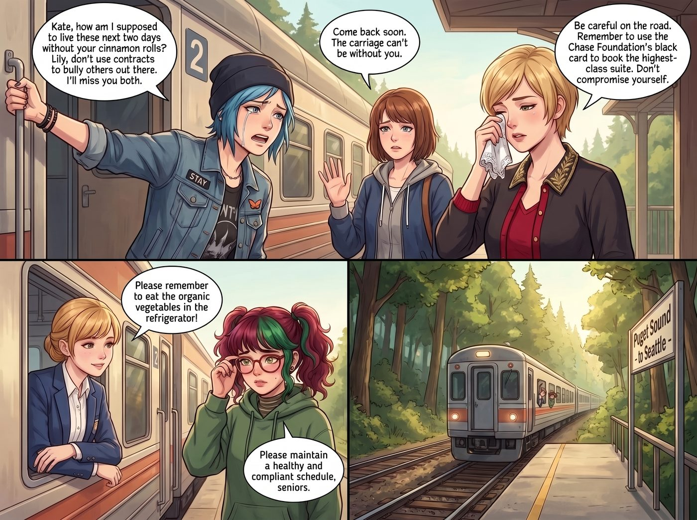

猴子稱王

當 Kate 帶著 Lily 前往西雅圖市區參加為期兩天的「西海岸烘焙與慈善法律援助交流會」時，二號車廂上演了一齣足以去角逐奧斯卡金像獎的「生離死別」。
Chloe 靠在車門上，眼角硬生生擠出一滴眼淚：「Kate，沒有妳的肉桂捲我這兩天該怎麼活？Lily，在外面不要用合約欺負別人，我會想念妳們的。」
Victoria 甚至優雅地拿出手帕擦了擦眼角：「路上小心。記得用 Chase 財團的黑卡訂最高級的套房，不要委屈自己。」
Max 則是依依不捨地揮手：「早點回來，車廂裡不能沒有妳們。」
Kate 溫柔地叮囑她們要乖乖吃冰箱裡的有機蔬菜，Lily 則推了推眼鏡，留下一句「請學姐們維持健康合規的作息」後，兩人坐上車緩緩駛離了林道。
一、瞬間破功
就在車尾燈消失在樹林拐角的那一零點一秒——
「砰！」Chloe 一把關上車廂門，臉上的悲傷瞬間消失得無影無蹤，取而代之的是宛如出籠野獸般的狂喜。
「她們走了！老娘終於不用吃那該死的苦瓜了！」Chloe 發出一聲猿猴般的歡呼，直接衝向沙發底下的暗格，拖出了一箱私藏的啤酒和三大包超辣多力多滋。
平時高高在上的名媛 Victoria 也是一秒破功。她一把扯掉脖子上的絲巾，踢掉高跟鞋，光著腳踩在地毯上，從包包底層掏出一本極度低俗的八卦雜誌和一包色彩鮮豔的橡皮軟糖。「Caulfield，把妳那個無聊的獨立民謠關掉！給我放那種最吵、最沒營養的流行電音！」
就連 Max 也徹底放飛自我。她把那件起毛球的法蘭絨襯衫反穿著，整個人以一種極度扭曲的姿勢癱在沙發上，直接抱著一整盒麥片，連牛奶都不加，用手抓著大口大口地往嘴裡塞。
這是沒有道德指南針和行政法規束縛的狂歡。
二、遠程降維打擊
然而，這場「猴子稱王」的狂歡只持續了不到兩個小時，就遭到了行政黑魔法的遠程降維打擊。
到了晚餐時間，Chloe 興沖沖地拿起手機，準備用 Victoria 的副卡訂購三十公里外那家最油膩、起司加倍的深盤披薩。
「叮！」手機彈出一條刷卡失敗的通知。
Chloe 愣住了，點開銀行簡訊，上面赫然寫著：
「交易拒絕。根據您的帳戶共同持有人（Lily）設置的『高鈉與高反式脂肪防禦機制』，該商戶已被列入健康黑名單。您的餘額目前僅限於購買全食超市（Whole Foods）的有機生菜沙拉或同等健康評級之商品。」
「這丫頭鎖了我的卡？！」Victoria 尖叫起來，她正準備打開智慧電視，看一檔名為《比佛利嬌妻》的無腦實境秀。結果螢幕一閃，跳出了一個鎖定畫面：
「此頻段已被區域網防火牆攔截。攔截原因：該節目的邏輯漏洞與價值觀會對觀看者造成不可逆的智力降級。——為您的精神衛生負責的 Lily 留。」
Max 剛想打開電腦玩會兒遊戲，卻發現 Steam 帳號也被自動登出了，取而代之的是一個無法關閉的彈窗：
「Max 學姐，久坐超過兩小時會導致下肢靜脈曲張。螢幕將在十分鐘後進入『強制護眼模式』。請站起來做一套伸展運動。」
晚上八點，狂歡的氣氛徹底死寂。
沒有深盤披薩，沒有垃圾實境秀，也沒有遊戲。三個平均年齡早就成年的傢伙，像三條失去夢想的鹹魚一樣，在幽暗的車廂裡啃著沒味道的麥片和生冷的小黃瓜。
「Max，」Chloe 咀嚼著小黃瓜，眼神空洞，「打電話給 Kate。就說我們想她了。哪怕明天要吃一整盤炒苦瓜，我也認了。」
「我已經打了，」Max 趴在桌子上，生無可戀地嘆了口氣，「但 Lily 設定了『免打擾社交隔離模式』，說是為了確保 Kate 在交流會期間擁有不受俗世干擾的完美睡眠。」
Victoria 抱著膝蓋縮在沙發角落，屈辱地咬了一口胡蘿蔔條：「等那個實習生回來，我一定要開除她……用最高規格的遣散費把她送走……嗚……這胡蘿蔔真難吃……」
這就是離開了管束的主角團。她們以為自己是重獲自由的狼，結果發現整個森林早就被實習生用合規的鐵絲網圍成了無死角的有機動物園。